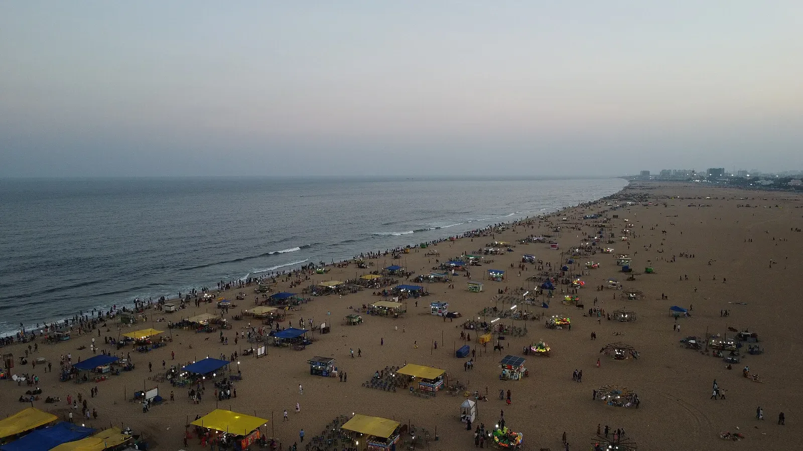
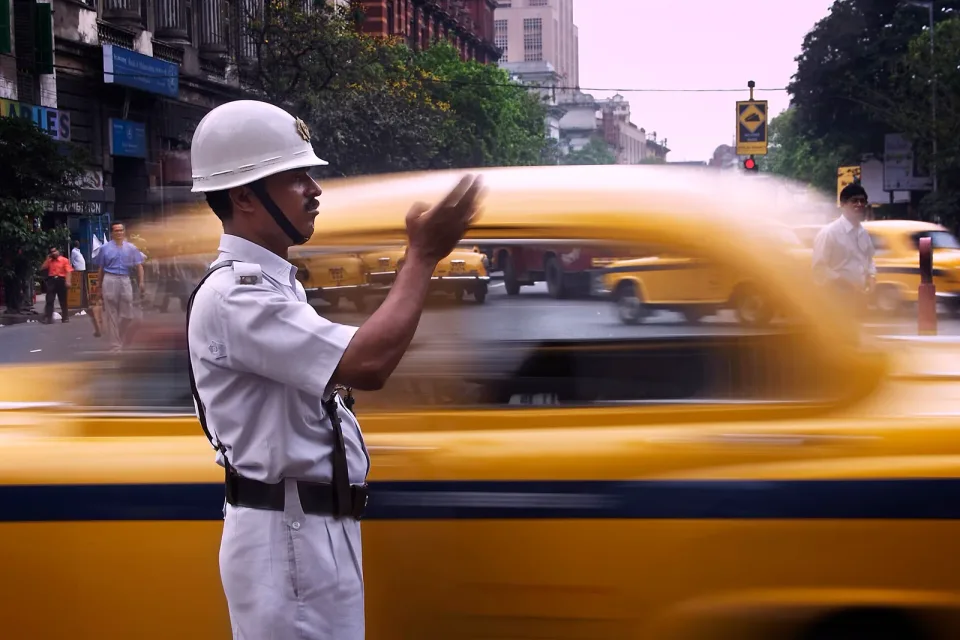
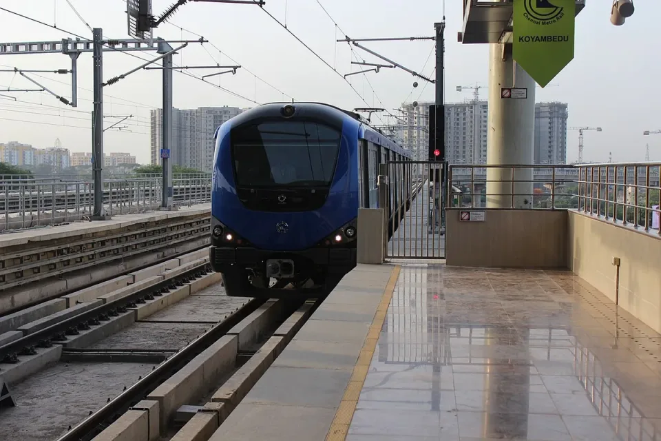

← Drishti
Real places. Real photographs.
The landing page uses photographs taken in India, sourced from Wikimedia Commons. No AI-generated scenes, illustrations or animated images are used.
These are contextual photographs, not live camera feeds or evidence of demo incidents. The people and organisations pictured do not endorse Drishti. Dates below are source capture dates, not demo dates.

Background · Marina Beach, Chennai
“Marina beach, Chennai aerial view.jpg” — Saiphani02, 11 February 2025.
Original photograph and source · CC BY-SA 4.0
Resized and converted to WebP. The interface applies responsive cropping and a dark green overlay.

Police · Kolkata, West Bengal
“India - Kolkata traffic cop - 3661.jpg” — Jorge Royan, 2005.
Original photograph and source · CC BY-SA 3.0
Resized and converted to WebP, with responsive cropping and caption shading in the interface. Motion blur is part of the original photograph, not animation.
Municipal · Ripon Building, Chennai
“Ripon Building panorama.jpg” — PlaneMad / Wikimedia Commons, 23 December 2007.
Original photograph and source · CC BY-SA 2.5
Resized and converted to WebP, with responsive cropping and caption shading in the interface.

Citizen · Chennai Metro, Koyambedu
“Chennai Metro Rail at Koyambedu.JPG” — KARTY JazZ, 5 July 2015.
Original photograph and source · CC BY-SA 4.0
Resized and converted to WebP, with responsive cropping and caption shading in the interface.
The adapted photographs remain available under their respective Creative Commons ShareAlike licences linked above. This does not change the licence of the application code.
Machine-readable source register · Demo evidence sources
{kind=link}
{kind=link}
{kind=link}
{kind=link}